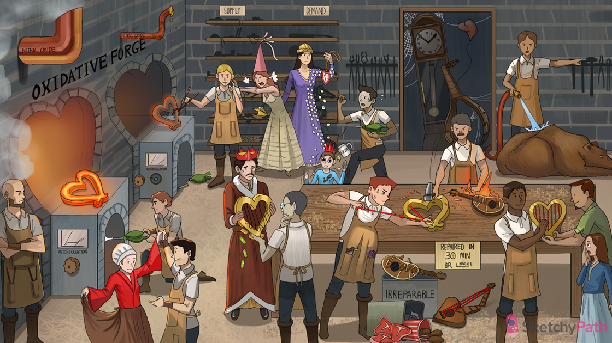

Oxidative forge: cardiac myocytes generate energy almost exclusively through oxidative phosphorylation
Oxygen bellows: myocytes extract a higher percentage of oxygen from blood than any other tissue in the body → coronary sinus has most deoxygenated blood
Dilated red exhaust pipe: coronary endothelial cells produce nitric oxide (NO), a gaseous molecule that promotes coronary vascular vasodilation
GruMPy blacksmith: NO increases cyclic GMP inside arteriolar smooth muscle cells → coronary vasodilation
Dancing with dilated red sleeves: adenosine is an important vasodilator of coronary arteries
Flat autoregulation graph: autoregulation (via NO and adenosine) normally keeps the coronary blood flow constant across a range of BPs by regulating coronary vasodilation
Gunky constricted exhaust pipe: coronary atherosclerosis obstructs luminal flow AND inhibits endothelial cell release of NO and other vasodilators
Broken autoregulation gauge: coronary atherosclerosis interferes with autoregulation mechanism and ability to maximally vasodilate
Glowing harp: well oxygenated myocardium
Cold inner harp surface: subendocardium becomes ischemic first
“Supply and demand”: mismatch between myocardial oxygen demand and coronary oxygen supply → ischemic heart disease
Pushing load: increased afterload on the heart (e.g. due to aortic stenosis or HTN)
Stenotic aortic princess hat and high pressure steam: aortic stenosis and hypertension increase afterload → increased myocardial O2 demand
Concentric conch shell: concentric myocardial hypertrophy (due to increased afterload) → decreased coronary O2 supply
Diamonds on left: the LEFT ventricle receives coronary blood flow during diastole
Raised heart watch and falling diamonds: tachycardia decreases time in diastole → decreased coronary flow to LEFT ventricle → myocardial ischemia
Running blacksmith: exercise increases myocardial O2 demand (tachycardia and increased contractility) and decreases coronary O2 supply (tachycardia)
Jittery cocoa mug: cocaine increases myocardial O2 demand (tachycardia and increased contractility)
Little constricted coronary crown: cocaine causes coronary artery vasoconstriction → decreased coronary O2 supply
Pale complexion: systemic hypoxia decreases coronary O2 supply (e.g. hypotension, shock, anemia and carbon monoxide poisoning)
Three falling P batteries: within seconds, ischemic myocardial cells switch from aerobic to anaerobic glycolysis → depleted ATP
Floppy harp strings: myofibril relaxation seen within SECONDS (depleted ATP in the cardiac myocyte)
Puffy harp repairman with candybar and ball of string: early pathologic changes in ischemic myocyte include cellular and mitochondrial swelling, glycogen depletion, and clumping of chromatin (REVERSIBLE cell damage)
Repairing harp with new red string: cellular swelling and other early changes are reversible with early reperfusion
“Repaired in 30 min or less”: irreversible damage to cardiac myocytes after ~30 minutes of ischemia
Ruptured and vacuolated mitochondrial lute: mitochondrial vacuolization or membrane rupture is a sign of IRREVERSIBLE cell injury
Spilling ChicKen and T-bone steaks: myocyte cell membrane breakdown (IRREVERSIBLE cell damage)→ release of troponin and creatine kinase
Stunned girl receiving repaired harp: STUNNED myocardium (viable myocytes do not immediately return to full activity) can last a few hours to days after reperfusion
hypercontracted lute: buildup of intracellular calcium during ischemia → hypercontracture and cytoskeletal damage on reperfusion (REPERFUSION INJURY)
Sparks and fire caused by repairman: reperfusion results in local release of free radicals, influx of inflammation, and further irreversible mitochondrial damage (REPERFUSION INJURY)
Old grandfather clock: Chronic ischemic heart disease (aka “ischemic cardiomyopathy”) → progressive heart failure
Patched-up and discarded lute frame: chronically ischemic hearts usually have evidence of “patchy fibrosis” from previous healed infarcts (more rarely, chronic severe CAD w/o infarct can also cause chronic ischemic heart disease)
Floppy heart balloon above dilated lute frame: Chronic cardiac ischemia → systolic heart failure with eccentric hypertrophy
Hibernating bear: chronically ischemic hearts may contain nonviable myocardial cells along with “hibernating” viable myocardial cells
Waking hibernating bear with vascular hose: revascularize a chronically ischemic heart to reactivate viable myocardial cells (reverse systolic dysfunction)